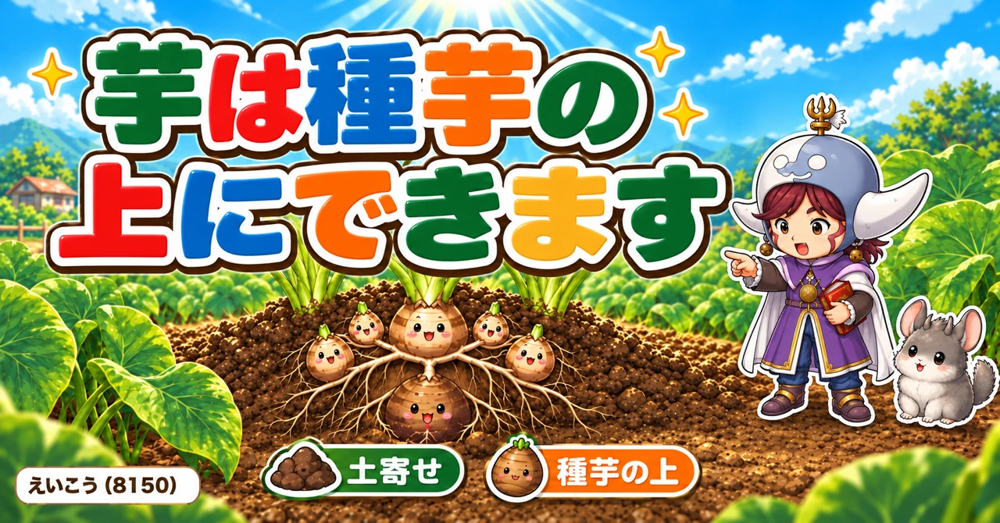
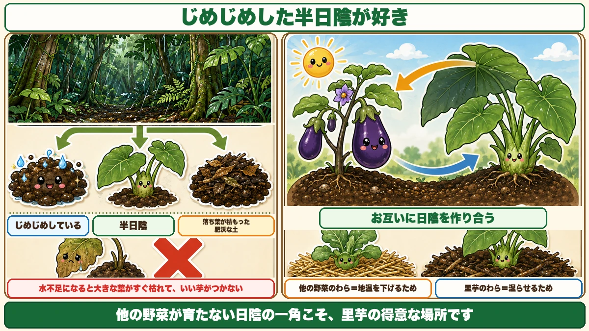
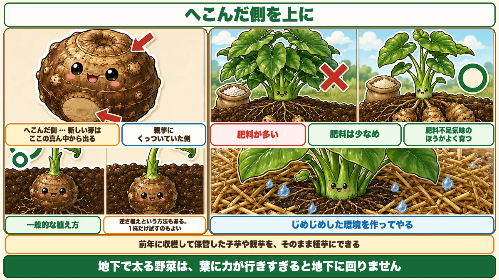
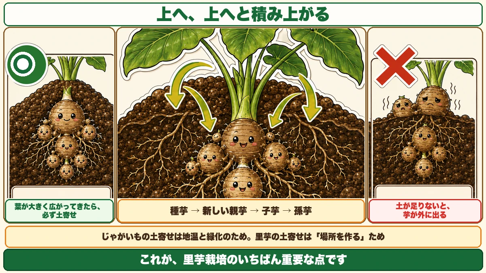

里芋栽培の確認帳｜芽出し・水やり・土寄せから冬の保存まで

どうも、8150（えいこう）です🌱 家庭菜園歴8年、理科の教員免許を持っていて、有機・無農薬で野菜を育てています。
📖 この記事の目次
この記事で分かること
- 里芋の準備は『健康な種芋』『夏に水を届けられる場所』『あとから寄せる土』の3点から始めます。
- 植える前の芋と、葉を広げた株では水の扱いを変えます。春からずっと同じ量を与える計画にはしません。
- 株の周囲に土を足す作業は、新しい芋が育つ空間の確保。追肥を省く日でも、土の確認は必要です。
- 芽が出ない、葉が黄ばむ、葉に穴があるときは、日付・土・虫・株全体の順に観察して対処を選びます。
- 日なたか半日陰か、追肥の回数、冬の保存温度には複数の説明があります。条件を見ずに一つの数字へまとめません。
- 収穫後は『すぐ食べる分』『冬に食べる分』『翌春に植える分』を分け、傷みと寒さを点検します。
大きな葉を見ると、里芋は勝手に育ってくれそうに見えますよね。でも、夏の乾燥と株元の土には、ちゃんと目を向けたい野菜です。葉は立派なのに、掘ると小粒ばかり・・・という結果を避けるため、地上と地下をセットで考えます。
このページは、春に準備するみなさんにも、すでに畑で困っているみなさんにも使える確認帳です。初めてなら早見と手順を順番に。葉が傷んでいるなら症状の章へ。保存を調べたいなら手順の後半とFAQへ進んでください。必要な場所だけ読んでも、次にすることが分かる形にしています☺️
早見：里芋の育て方（ひと目で分かる数字）
春から秋までの数字
- 芽出しを始める時期：3月後半から準備する説明があります。室内で管理し、植えたい日から約1か月を見込む方法です。種芋の販売時期と地域の寒さも確認します。
- 植え付け：一般地では3月下旬〜5月、寒い地域では5〜6月という説明があります。4月後半〜5月初旬を勧める方法もあり、全国同じ日付ではありません。
- 温度の目安：発芽に向く温度は15〜30℃、生育に向く温度は25〜30℃という説明があります。暖かい時期に長く育つ野菜ですが、早植えだけで成長を早められるわけではありません。
- 芽が見えるまで：芽出しに約1か月、植えたあとも3〜4週間ほど待つ説明があります。下から芽が出ているか、マルチの下で止まっていないかは別に確認します。
- 株間：一般的な子芋の種芋なら40cm前後、親芋なら50cm前後、40〜50cmとする方法があります。大きく広げる栽培では1.1〜1.4mという事例もあるため、全方式を平均して決めません。
- うね幅：一列植えで65cm、ほかの野菜と組み合わせる方法で80cmほどという例があります。土寄せに使う通路の土と、作業する足場を別に確保します。
- 植える深さ：芋の上にかぶせる土を3〜5cm、約7cm、7〜8cm、5〜10cmとする説明があります。穴の深さと覆土の厚さを混同しないことが大切です。
- 元肥の準備：植え付け2〜3週間前に入れる方法があります。一方、植えるときに位置を分けて肥料を置く方法もあり、同じ手順の数字ではありません。
- 1回目の追肥：行う方法では5月下旬〜6月中旬、本葉2〜3枚、草丈20〜30cm頃が目安です。遅い植え付けでは月だけを先に合わせません。
- 2回目の追肥：6月下旬〜7月中旬、本葉5〜6枚頃。1回目から約1か月後を区切りにする説明があります。
- 追加の追肥：2〜3回とする方法と、元肥が十分なら追肥を必須にしない方法があります。終了時期も7月中旬、8月上旬〜中旬、9月の例に分かれます。
- 土寄せ：2回または3回を予定する方法があります。3回の計画では5月下旬〜6月中旬、6月下旬〜7月中旬、7月下旬〜8月中旬が区切りです。
- 寄せる土の厚さ：一度に3〜5cmほど足す説明と、5〜10cmまたは約10cmかける説明があります。初期の植え方と作業回数をそろえて考えます。
- 収穫時期：10〜11月が中心です。品種によって9月頃から、あるいは11月以降になる説明もあります。寒さが早い地域は、霜までの日程を優先します。
- 植え付けから収穫まで：150〜180日程度、または約180日という説明があります。約半年を見込む計画で、芽出し・天候・マルチの有無によって変わります。
- 連作の間隔：場所を替える説明と、続けて育てた事例が併存しています。材料には里芋を何年あければよいかの統一した年数がないため、ここで数字を補いません。
数字を選ぶ前に確認したいこと
同じ里芋でも、芽を出した苗を植えるのか、まだ芽のない芋を植えるのかで出発点が違います。親芋を使う計画と子芋を使う計画にも差があります。株間だけ別の方法から借りて、追肥はさらに別の方法から足すと、なんか忙しい栽培になりますよね💦
数字が違うときは『地域』『種芋の種類』『最初の肥料』『土の乾き方』『マルチを残すか』を書き出してください。この5つをそろえると、比較しやすくなります。説明が分かれる理由や、決めきれない部分は後ろの章にまとめています。
- 種芋の表示と植え付けの地域別目安を確認した
- 収穫まで約半年使う場所と通路を確保した
- 夏の水やりを続けられるか考えた
- 土寄せに使える土を残した
- 収穫日を一日だけに決めず、株の状態と霜の予定で調整する
里芋の計画は、植える日だけ決めるより『夏にどう世話するか』まで考えると組みやすいです。水場が遠いなら、少ない株数から始めるのも立派な作戦です。作業できる範囲に収めて、芋が太る季節まで面倒を見られる形にしましょう。
作業の手順（時期の順）
1．食べたい芋と栽培の場所を決める
- 子芋を中心に食べるのか、親芋も利用したいのかを決め、売り場の品種表示を確認します。
- 春から秋までの日当たりと、雨のあとに水が残る場所を観察します。
- 水場からの距離を確かめ、夏に管理できる株数を決めます。
- 葉が広がる場所と、追肥・土寄せ・収穫のための通路を残します。
- 前年の里芋に生育不良や病気があった場所は、翌年の候補から外すことを考えます。
最初の品種選びは『食べたい部分』を整理するところからです。子芋向けの品種と、親芋も食べるタイプでは、収穫後の使い方が変わります。親芋が大きく取れたからといって、どの品種でも子芋と同じ食感になるわけではありません。
ねっとりした子芋を楽しむ方向と、親芋も含めて使う方向。その違いを売り場で確認しておくと、掘ってから「この大きいの、どうしよ？」となりにくいです。食用の茎を利用したい場合も、茎の色だけで決めず、利用できる品種かを確かめます。
場所は、単に一番暗いところを選ぶのではありません。半日陰を利用する説明はありますが、日なたで大きく育てる説明もあります。午後の強い日差し、土の乾き方、夏の水やりを合わせて判断してください。湿った場所を選ぶ場合も、雨水が逃げない場所とは区別します。

この図は、暖かさと水分を考える入口として見てください。熱帯由来だからといって、暗い場所や水に沈んだ土なら何でもよい、という意味ではありません。『乾かさず育てる』『根を長く水浸しにしない』を両立する場所を探します。
2．種芋を手に取り、植えるものを選ぶ
- 芽が出る部分を探し、削れや虫食いがないか見ます。
- 芋に張りがあり、触ったときにぶよぶよへこまないか確かめます。
- カビ、腐った部分、大きな傷、極端なしなびがあるものを除きます。
- 子芋を使うか、保存していた親芋を使うかを決めます。
- 余裕があれば、発芽しない株の補充用に予備を用意します。
種芋は、見た目の大きさだけで選ばないことが大切です。大きくても傷んだものは、よい出発点にはなりません。表面が固く見えても、一部分だけへこむものがあれば、その部分も確認します。
食用に売られている里芋を植える方法もあります。ただし、品種名が分からないことや、芽の部分が調整されていることがあります。『食用だから全部使える』とまとめず、芽と芋の健康状態を一つずつ確認してください。品種と収穫時期を計画したいなら、表示のある種芋の方が整理しやすいです。
親芋を種に使う方法はありますが、複数の芽が広がり、管理のしかたも変わります。初めてなら切らずに使う方法を候補にしてください。株数を増やしたくて分割すると切り口が増え、腐敗の問題も増えます。少ない芋から増やすことより、健康な株を育てることを先に考えると安心です。
3．芽出しで、使える芋を確認する
- 水が抜ける容器を用意し、芽出し用の土を入れます。
- 芽が出る側を上へ向け、先端が土の表面に近い位置になるよう置きます。
- 寒い外へ置きっぱなしにせず、暖かい室内で管理します。
- 土の乾きと湿りすぎを確認し、容器を密閉したままにしません。
- 芽が出たものと出ていないものを分け、畑へ植える株を選びます。
芽出しは、畑へ行く前の健康診断みたいな役割です。ちゃんと芽が動いた芋を選べるので、植えた場所が空いたままになるリスクを減らせます。芽がそろうと、その後の葉の枚数や作業時期も比べやすくなります。
芽出し用の土には、市販の培養土を使う説明があります。排水穴のない箱に土と芋を入れ、水だけ足す形にはしないでください。暖かくても蒸れて腐ったら、芽を出す準備が逆効果になります。
置き場所は、日当たりのよい窓辺という説明と、直射日光を避ける説明に分かれます。ここでは、室内の暖かさを確保しつつ、強い日差しで容器が熱くなりすぎないかを見ます。窓辺は昼と夜の差もあるので、『家の中だからずっと同じ温度』とは考えません。
芽出しに約1か月を見込む方法があります。数日動かないだけで芋を切ったり、毎日掘り返したりしなくて大丈夫です。まだ固く健康なのか、柔らかくなってきたのかを分けて観察しましょう。尻切りという、芋の下側を切る方法もありますが、必須の作業にはしません。切り口から腐る可能性があるため、通常の芽出しと別の選択肢として扱います。
4．植える前に、うねと肥料の計画を整える
- 雨のあとに水が逃げるか確認し、必要なら通路や排水の経路を整えます。
- 水が残りやすい土では高めのうねを検討し、乾きやすい土では最初から高く盛りすぎません。
- 過去に入れた肥料と土の状態を確認し、元肥の方法を一つ選びます。
- 元肥を前もって混ぜる方法では、植えるまでの期間を確保します。
- 株間と植える位置を決め、あとから土を寄せられる余地を残します。
元肥は、植える前に用意する肥料です。追肥は、育ち始めたあとに足す肥料。この二つを一緒に考えると、必要以上に足しやすくなります。最初に十分用意する方法と、あとで段階的に補う方法は、栽培全体の計画として比べてください。
材料の一例では、1㎡当たりペレット状の鶏糞200gを元肥として使います。別の方法には量や組み合わせの異なる説明があり、この200gはあらゆる肥料へ置き換えられる共通量ではありません。製品の成分や表示を確認し、複数の方法の量を足し算しないことが大切です。
うねの高さも同様です。『里芋は水が好き』『野菜には水はけが必要』は、どちらも場所の判断に関わります。雨のあとにいつまでも水が残る場所と、すぐ乾いてしまう場所で、同じ高さに作る必要はありません。土の様子に合わせ、最初の形を決めましょう。
5．種芋を植え、位置を記録する
- 地域の寒さと土の温まり方を確認して植え付けます。
- 子芋を使う一般的な方法では株間40cm前後、親芋を使う方法では50cm前後を候補にします。
- 芽の位置を見て上向きに置きます。くぼみだけで判断せず、実際の芽を確かめます。
- 選んだ方法に合わせて土をかぶせ、芋の上から土の表面までの厚さを確認します。
- 植えた日、種芋の種類、位置、覆土の厚さを記録します。

初めての植え付けは、通常の上向きから始めると経過を追いやすいです。逆さ植えは後ろの章で説明しますが、向きを変えると、芽の出方やその後の管理も一緒に考える必要があります。収穫が増えるという話だけを拾って、全株を逆さにする必要はありません。
深さの説明は、穴の底までなのか、芋の頭の上にかぶる土なのかを確認してください。大きな親芋と小さな子芋を同じ穴の深さに置くと、頭の位置はそろいません。測る場所が違えば、同じ数字でも植わる状態が変わるんですよね。
土が湿っている場合、植えた直後にたくさん水を足さない方法が多くあります。まだ芽が出ていない芋を、夏の大きな株と同じように扱わないでください。極端に乾いた土では水分を調整しますが、ずっと水がたまる状態にはしません。
6．マルチを使うなら、芽を閉じ込めない
- 土の乾燥や雑草を抑えたい場合は、シートで表面を覆うマルチ栽培を選びます。
- 植えた位置が分かる目印を残します。
- 芽がシートを押し上げてきたら、位置を確認して外へ出します。
- 芽や葉柄が熱いシートに触れ続けないか、穴の周囲を見ます。
- 夏は土の温度と株の状態を見て、シートを残すか外すかを判断します。
マルチは、かけたあと放置するための道具ではありません。芽のない芋の上に張る方法では、芽が伸びてきたときの確認が必要です。芽がシートの下で曲がったり、熱で傷んだりするケースがあります。
発芽がゆっくりだからと、植えた場所を見ないままにしないでください。上から小さく持ち上がっている部分があれば、土とシートの間で芽が動いているかもしれません。芽を切らないよう位置を確かめ、必要な部分を開けます。
夏に外す方法では、育った茎に引っかけて一気に引っ張らないこと。切り分けながら外す方が、株を傷めにくいです。隣の株の葉も大きくなっているので、作業する人の通る場所まで見ておきましょう。
7．葉が増えたら、追肥と最初の土寄せをする
- 本葉2〜3枚、草丈20〜30cm頃を一つの区切りにして株を観察します。
- 葉色、葉の数、葉柄の太さを見て、最初の肥料の計画と照らし合わせます。
- 追肥を行う場合は、選んだ方法と製品表示に合わせ、株へ密着させずに施します。
- 通路側などから土を集め、株の周囲へ寄せます。
- 寄せた土の厚さと、次回使える土が残っているかを確認します。
追肥と土寄せは同じ日にできますが、目的は別です。追肥は栄養の補充。土寄せは芋が育つ土の確保です。『今日は肥料が要らなさそう』でも、株元の土まで不要とは限りません。

植えた芋より上の位置に新しい親芋が育ち、その周囲へ子芋が広がります。最初に植えた深さだけで栽培を終えると、この増えた部分を覆う土が足りなくなることがあります。地上の葉が広がるとき、地下でも場所が必要になると考えてください。
土を集めるときは、株のすぐそばを深く削りません。根を切ったり、できかけの芋を露出させたりする原因になります。通路の土を使う方法でも、後半には芋が広がっている可能性があるので、いきなり深く鍬を入れず、位置を見ながら進めます。
8．梅雨から夏に、二度目以降の管理をする
- 本葉5〜6枚頃、または前回から約1か月後に、株全体を再確認します。
- 追肥をする場合は、根が広がった範囲を考え、株元だけへ集中させません。
- 土を寄せる前に小さなわき芽を確認し、大きな芋をねらう方法では地際で切ります。
- マルチを外して土寄せする方法なら、シートを慎重に外してから土を足します。
- 3回目の土寄せを予定する方法では、7月下旬〜8月中旬にも株元を点検します。
二度目は、葉も根も初期より広がっています。一度目と同じ場所へ肥料を置けばよいとは限りません。葉先の延長上やうねの肩に施す説明があります。最初の小苗の感覚のまま、株元を掘り続けないようにしましょう。
3回目は土寄せだけにし、葉色が薄く生育が弱いときに限って追肥も考える方法があります。土を足す回数と肥料の回数は一致しなくてOKです。元気な株にも毎回同じ量を追加する計画にはしません。
わき芽は、周囲の子芋などから伸びる小さな芽です。取る方法では、無理に引き抜かずハサミで切ります。小さい芋を数多く楽しむために残す説明もあるので、すべての栽培で一律に処分する話ではありません。どんな収穫にしたいかを先に決めると作業がぶれにくいです。
9．梅雨明け後は、水と地表の乾燥を点検する
- 雨の有無だけでなく、株元の土が乾いているか見ます。
- 乾燥しているときは、朝や夕方の涼しい時間に十分な水を届けます。
- 大きく育った株では、株元だけでなく周囲の根が広がる土も確認します。
- シートを使わない場合は、乾いた草やわらを地表へ敷いて乾燥を抑えます。
- 雨や水やりのあとも葉が回復しないときは、虫・根・高温の影響を調べます。
里芋は、葉が広がった夏の水不足に注意したい野菜です。葉へさっと水をかけただけで、土まで十分湿ったと考えないでください。表面だけぬれて中が乾いたままなら、根の水不足が続きます。
敷き草は、刈って乾いた草を地表へ置く方法です。春の早い時期から厚く敷くと土が温まりにくくなるため、初期は薄くし、梅雨明け後に追加する説明があります。時期で目的を変えられるのが、地味やけど使いやすいところです。
水をためる溝を使う方法もありますが、排水の悪い畑へそのまま当てはめません。水分を保つことと、根の周囲へ停滞した水を残すことは分けて考えます。隣に乾燥を好む作物がある場合は、水やりがそちらへ影響しない配置にしてください。
10．秋は、残っている葉と収穫の予定を確認する
- まだ元気な葉があるか、虫が増えていないかを見ます。
- 小さなわき芽が増えたら、目指す芋の大きさに合わせて処理します。
- 植えた日と品種の収穫目安を確認します。
- 葉全体の黄ばみや葉柄の枯れ方を見て、夏の被害との違いを考えます。
- 強い霜が来る前に、掘る順番と保存場所を決めます。
秋は地下の芋が大きくなる時期なので、『もう植えてから長いし、葉は多少傷んでもええかな』と見回りをやめないこと。残っている健全な葉が、芋へ回す材料を作ります。アブラムシなどは葉裏まで確認してください。
一枚だけ古い葉が枯れた状態と、秋に株全体が黄ばんできた状態は違います。暑い時期に急に葉が傷んでも、それだけで収穫時期とは判断しません。日付と全体の変化を組み合わせます。
収穫まで150〜180日という目安は、カレンダーで位置をつかむための数字です。180日を超えれば必ず大芋になる保証ではありません。霜の予報が迫っているなら、大きさを待つことより品質を守る計画を優先しましょう。
11．晴れた日に、芋を切らずに掘り上げる
- 土がべたつく雨直後を避け、作業しやすい日を選びます。
- 葉柄を整理し、株の位置が分かるようにします。
- 株の中心から20〜30cmほど離れた位置を目安に、スコップを入れます。
- 芋が広がっていればさらに外側から掘り、周囲の土をゆるめます。
- 株を持ち上げ、食べる分と保存する分を選別します。
20〜30cmは、どの株にも切り傷が入らない保証の距離ではありません。親芋を使って大きく育った株や、周囲へ芋が広がっている株では、様子を見て離してください。刃を中心へ向けて斜めに差し込むより、外側から垂直に入れて土をゆるめる方法が紹介されています。
株を力任せに抜くより、まず土をゆるめることを優先します。性別ではなく、株の重さと土の固さに合わせて進めてください。芋を割ったり切ったりすると、保存のために確保した株ほど困るんですよね。
一度に全部掘る必要はありません。霜まで余裕があり、畑で保てる条件なら、一株ずつ食べる分を収穫する選択肢もあります。ただし、残す株には寒さと雨の対策が必要です。『順番に掘る』と『冬まで無条件で放置する』は同じではありません。
12．保存する芋を選び、翌春までの扱いを決める
- 傷、腐敗、柔らかい部分がある芋を長期保存の組から外します。
- すぐ使う分、冬に食べる分、翌年に植える分へ分けます。
- 保存する分は、表面の泥がびしょびしょのまま箱へ詰めません。
- 室内保存なら新聞紙と箱を使い、寒さ・乾きすぎ・蒸れを避けます。
- ときどき中を確認し、柔らかくなった芋やカビのある芋を取り除きます。
保存は『どこかへしまって終わり』にしないのが大事です。室内でも置き場所で温度は変わります。寒い玄関、暖房の近く、昼に強い日が当たる場所を同じ扱いにしないでください。密閉したビニール袋に詰めたままでは、湿気がこもりやすくなります。
親芋と子芋をつないだまま保存する方法も、分けた子芋を一個ずつ包む方法もあります。大きな株を丸ごと置ける場所があるか、春に親芋を使いたいかで選びます。切り傷を増やさないことと、途中で傷みを見つけられることを優先してください。
土中保存には、穴の深さ30〜40cmとする方法や60〜80cmとする方法があります。深さだけをまねれば成功するわけではなく、雨水が入らない場所、保温、掘り出す作業も必要です。家庭菜園で無理に深い穴を作る必要はありません。管理しやすい室内保存から考えても大丈夫です。
保存できる期間も、短期の2〜3週間という説明と、翌春まで保った例があります。春まで残す計画なら、途中で傷む可能性を含めて点検し、すべてを長期保存へ回さないようにしましょう。翌年の種芋を残す場合は、収穫時だけでなく植える前にも健康状態を確かめます。
失敗の見分け方（症状→原因→やること）
植えても地上に芽が見えない
- 症状：植えた場所に変化がなく、隣の株より遅れています。
- 考えられる原因：土が冷たい、芽の動きが遅い個体、覆土が厚い、種芋の傷み、シートの下に芽がとどまっていることが考えられます。
- やること：植えた日と芽出しの有無を確認し、マルチの持ち上がりを調べます。必要なら土を少しよけて芽と芋の状態を見て、健康な芽が動いていれば戻して待ちます。
芽が見えないと、つい水や肥料を追加したくなります。でも、冷たい湿った土で芋が腐り始めているなら、水を増やす方向では解決しません。『遅い』と『傷んでいる』を分けるのが先です。
植えたあと3〜4週間ほど待つ説明があります。日数だけで処分せず、芽が中で伸びているかを見てください。反対に、柔らかく崩れてきた芋をいつまでも待つ必要もありません。健康な予備苗があれば、傷んだ種芋の代わりに使うことを考えます。
夏の昼に葉が垂れ、縁が傷む
- 症状：葉がしおれたり、縁が変色して枯れたりします。
- 考えられる原因：水分不足、強い暑さ、熱くなったシート、根の傷みなどです。水を与えていても高温の影響が出る場合があります。
- やること：土の湿りと排水を確かめ、乾いていれば根の範囲へ水を届けます。地表の乾燥を抑え、涼しい時間に葉が戻るか、新しい葉が育つかを観察します。
一回の水やり直後の見た目だけで結論を出さないでください。葉が傷んだあと、新しい葉で育ち直す例はあります。ただ、傷んだ葉そのものが元どおりになるわけではありません。
土が十分湿っていて、株全体のしおれが続く場合は、さらに水を足す前に根の状態を考えます。いつまでもぬかるむ場所なら排水の点検が必要です。夏枯れの回復例があることと、どんな株も必ず回復することは分けて受け止めましょう。
葉色が薄く、株が頼りない
- 症状：葉が少なく、葉色が薄い、葉柄が細い、下の葉が早く枯れるなどが重なります。
- 考えられる原因：肥料不足のほか、水不足、根の不調、虫の被害、植え付けの遅れなども確認します。
- やること：虫と土の水分を先に調べ、元肥と追肥の記録を見ます。適期に肥料不足が疑われるときは、採用している方法に合わせて補います。
材料には、健全な株で元気な葉が約5枚、肥料不足が疑われる株で4枚以下という観察の目安があります。ただし、枚数だけで肥料不足を確定する診断表ではありません。植えて間もない苗と、夏に大きくなった株の枚数は比べられないですよね。
里芋では古い葉が枯れ、新しい葉へ入れ替わります。一枚の黄ばみではなく、元気な葉が減り続けているか、次の葉が十分育つかを見てください。遅い時期に大量の肥料を足せば全部取り戻せる、という計画にはしません。
葉が大きく欠け、急に食べられている
- 症状：大きな穴や欠けが増え、葉の面積が短期間で減ります。
- 考えられる原因：セスジスズメなどの幼虫や、ほかの葉を食べる虫が候補です。風で裂けた場合とは分けます。
- やること：葉の表裏と葉柄の近くを見て、幼虫を探して取り除きます。一枚で見つからなくても、隣の葉と株を続けて調べます。
大きな幼虫は、初めて見ると「え、こんなんおったん？」となるサイズです。見つけやすい反面、食べる量も多いので、穴が増えたら次の定例作業まで待たずに確認します。
材料には2週間に一度程度の見回りという例がありますが、すでに被害が出ている株の放置期間として使う数字ではありません。水やりのついでに葉を見ると、変化を拾いやすくなります。葉裏の粒を見つけたときも、形だけで虫の種類を言い切らず、周囲の虫と被害を確認してください。
小さな虫が集まり、葉が黄ばんでくる
- 症状：葉裏や若い部分に小さな虫が集まり、葉の色や生育に変化があります。
- 考えられる原因：アブラムシの吸汁被害が候補です。黄ばみだけなら水分や根など別の原因もあります。
- やること：虫の付着を実物で確かめ、少ないうちに物理的に取り除きます。水で落とす方法では、葉を傷つけないようにし、あとで残っている虫も見ます。
葉の表側がきれいでも、裏側には虫がいる場合があります。株全体を遠くから眺めるだけでは見落としやすいんですよね。若い芽の近くも確認します。
薬剤の選択は、この記事にない商品名や配合を足して済ませません。材料だけでは登録農薬の適用や使用回数を確認できないため、ここでは観察と物理的な除去を中心にします。被害が続く場合は、実物や写真を持って園芸店などへ相談してください。
葉に不規則な色むらや病斑が続く
- 症状：通常の古葉の黄ばみとは違う色むらや、広がる斑点が見られます。
- 考えられる原因：病気のほか、虫の吸汁、葉焼け、水分の問題も考えます。文章だけで病名を確定しません。
- やること：表裏、若い葉、隣の株を撮影し、いつから広がったかを記録します。疑わしい株を翌年の種芋用に回さず、地域の相談先へ確認します。
材料にはモザイク病や疫病の話がありますが、写真による詳しい見分け方はそろっていません。斑点の色だけで断定して対策を選ぶより、変化の記録を持つ方が役に立ちます。
病気が疑われる葉や株を、健全な残りとまとめて畑へ戻すことも避けたいところです。原因が分からないまま残りをすき込むと、翌年の状態を確認しにくくなります。判断がつくまで分けて扱います。
株元の土から芋や芽が出ている
- 症状：芋の一部が地表へ見えたり、周囲から小さな葉が増えたりしています。
- 考えられる原因：土寄せが足りない、雨で土が流れた、子芋などから芽が伸びたことが考えられます。
- やること：株の周囲を掘り返さず、育つ場所を覆うように土を補います。大きな芋をねらう方法では、余分な芽を地際で切ってから整えます。
露出したからといって、その芋の状態を確認せずに食用の判断までしてはいけません。生育中はまず土を確保し、収穫時には傷みを確認します。緑になった部分の扱いを、別の芋の知識だけで決めないことも大切です。
土を寄せようとして株元を削り、かえって芋を出してしまうのは避けたい作業です。足す土をどこから持ってくるか決めてから始めてください。土寄せは、芋を探すための試し掘りではありません。
掘った芋が小粒ばかりだった
- 症状：芋の数はあるのに、一つ一つが小さく感じられます。
- 考えられる原因：水不足、土寄せの不足、わき芽の放置、収穫が早い、生育期間が短いなどを振り返ります。
- やること：植えた日、夏の水やり、土寄せ、残した芽を記録から確認します。翌年は変更点を絞り、原因を追える計画にします。
芋の大きさだけを見て『肥料を増やせばよかった』と決めつけないでください。乾燥が続いていたなら、水の確保が先だった可能性があります。数を優先してわき芽を残したなら、小粒が増えるという説明とも照らし合わせます。
翌年に全部の条件を変えると、よくなっても何が効いたのか分かりません。例えば、植える方法は同じにして、土寄せの日付と夏の土の湿りを記録する。こういう小さな比較でも、次の栽培に使える情報になります。
保存中に柔らかくなる、しなびる、カビが出る
- 症状：一部がぶよぶよへこむ、芋がしなびる、表面にカビが出るなどです。
- 考えられる原因：収穫時の傷、低温、湿気のこもり、乾きすぎ、濡れたままの収納が候補です。
- やること：傷んだ芋を取り除き、隣の芋も確認します。箱の中の湿り、置き場所の温度、通気を見直し、長く置く予定を短くすることも考えます。
同じ箱でも、全部が同時に傷むとは限りません。一つ傷んだ芋を見つけたら、それだけ取って終わらず、接していたものと包んだ紙を確認してください。
外側が乾いていることと、中まで健康なことは別です。植える予定の芋も触って確かめ、柔らかい部分や異常があるものを使わないようにします。春まで残すことを優先して傷みを見逃すより、健康なものだけを次へつなぐ方が安心です。
説明が分かれていること
日なたと半日陰、どちらに植えるのか
- Aという説明：栽培解説には、湿りやすい半日陰を利用し、ほかの野菜で使いにくい場所を活用する方法があります。
- Bという説明：別の栽培解説では、日なたの方が大きく育つとして、日当たりを重視します。
- どう考えればよいか：光の量と土の水分を分けて見ます。半日陰でも育つことと、日陰ほど収穫が増えることは同じではありません。日なたでは水と地表の乾燥対策を合わせて計画します。
材料の説明だけでは、同じ品種・同じ水分条件で比べた収量の結論は出せません。明るさの違う候補があるなら、午前と午後の日当たり、夏に水を届けられるかを比べてください。湿った半日陰を利用する話を、常に暗い場所へのおすすめに広げないことが大切です。
芽出しは必ず必要なのか
- Aという説明：芽出しをしてから植えることを重視し、発芽しない芋を前もって選別します。
- Bという説明：マルチで土を保温する栽培では、芽出しせずに植える方法があります。
- どう考えればよいか：苗を選ぶ安心感を優先するなら芽出し、作業場所がなく保温と発芽の見回りができるなら直接植えも候補です。どちらでも健康な種芋を選びます。
芽の出た苗を購入するという選択肢もあります。芽出しをする場所がないから栽培できない、という話ではありません。自分で管理できる工程から始めれば大丈夫です。
植える深さの数字が違う理由
- Aという説明：覆土を3〜5cm程度とし、深く埋めて芽が遅れたり腐ったりすることを避ける方法があります。
- Bという説明：覆土7〜8cm、または5〜10cmという方法があります。寒い時期に浅くしすぎない説明も含まれます。
- どう考えればよいか：植える季節、芽出しの有無、土の湿り、芋の大きさ、マルチを確認します。数字を平均した深さを全株へ当てはめません。
『穴を10cm掘る』と『芋の上へ10cm土をかける』は別です。深さを調べるときは、測る起点までメモしてください。芽出し中の先端を浅く置く手順を、そのまま畑の覆土へ使うのも避けます。
肥料を少なくするか、しっかり与えるか
- Aという説明：葉ばかり茂らせないため、肥料や窒素を控える考え方があります。
- Bという説明：栽培期間が長く吸収力も強いとして、元肥と追肥で肥料切れを避ける考え方があります。
- どう考えればよいか：前作からの蓄積、最初に入れた量、葉と根の状態を確認します。少なめを選ぶ場合も、意図的に株を弱らせる計画にはしません。
葉が芋の材料を作る以上、葉を育てなくてよいわけではありません。一方、葉が大きいだけで芋も大きいと保証されるわけでもありません。大きさ、色、新しい葉の伸び、土の湿りをまとめて観察することが、両方の説明を使い分ける入口です。
追肥をいつ終えるのか
- Aという説明：5〜6月と6〜7月に追肥し、7月中旬、または8月上旬までに終える計画があります。
- Bという説明：8月に肥料を足して秋の肥大へつなぐ方法や、9月に追加する説明もあります。
- どう考えればよいか：肥料の効き方、元肥、生育の遅れ、地域の残りの暖かい期間を合わせます。すべての月の追肥を一本の年間計画へ足しません。
『最後の追肥』という言葉だけを比べるより、その前に何回、何を施したかを確認してください。材料には追肥を必須としない説明もあります。回数を守ること自体が目的にならないよう、株を見て決めます。
土寄せの厚さと回数
- Aという説明：3〜5cmほどの土を寄せ、栽培中に約2回行う方法があります。
- Bという説明：約10cm、後半に5〜10cmほどをかけ、3回行う方法があります。
- どう考えればよいか：一回の追加量なのか、作業後の全体の高さなのかを区別します。最初の覆土と、芋が増える場所の余裕を確認しながら整えます。
15cmほどの山を作るという説明もありますが、一度の土寄せの厚さと同じ尺度として比べないでください。何cm寄せたかだけでなく、芋が露出せず、根を傷つけず、乾きすぎない形になっているかを見ます。
マルチがあれば土寄せを省けるのか
- Aという説明：マルチを収穫まで残し、土寄せを省いて育てる方法があります。
- Bという説明：二度目の追肥頃にマルチを外し、土を足して大きな芋を育てる方法があります。
- どう考えればよいか：作業を減らす目的と、芋の大きさをねらう目的を分けます。シートを残す栽培でも、株元の状態と夏の熱は点検します。
外さずに収穫できても、小ぶりになりやすいという説明があります。『育つか』と『どんな芋が取れるか』は別の問いです。忙しくて作業を絞りたい場合も、何を優先するかを決めたうえで選べば、収穫後の振り返りがしやすくなります。
逆さ植えで収穫が増えるのか
- Aという説明：芽を下向きに置くと伸びる経路が変わり、複数の茎を育てやすくなるという考え方があります。
- Bという説明：別の方法では、わき芽が出にくくなり芽かきが楽になると説明します。小さい芋が増えるという見方もあります。
- どう考えればよいか：親芋と子芋、芽かき、株間、土寄せなどの条件を分けます。材料には重量をそろえた詳しい比較がないため、収量の倍率を保証しません。
試すなら通常の植え方を残し、一部だけ条件を変えて記録する方法が分かりやすいです。個数だけでなく、食べやすい大きさの芋がどれくらいあったかも見ると、自分の目的に合うかを判断できます。試した結果を、すべての畑へ広げないことも大切です。
保存前に洗うか、土を残すか
- Aという説明：洗って表面を乾かせば、食用にも種芋用にも保存できるという方法があります。
- Bという説明：洗わず、湿った土を少し乾かしてから軽く落とす方法や、土を落としすぎない方法があります。
- どう考えればよいか：すぐ食べるか長く置くか、傷の有無、表面の湿り、収納の通気を確認します。初めて長期保存するなら、洗わずに土を軽く落とす方法を候補にできます。
ここでいう乾燥にも幅があります。数日しっかり乾かす説明と、泥のべたつきだけを取る説明は、同じ手順ではありません。片方の洗い方ともう片方の収納をつなげる前に、芋の状態を確かめてください。
保存温度と保存期間
- Aという説明：保存温度は13℃前後という説明があります。家庭での室内保管を2〜3週間ほどとする話もあります。
- Bという説明：6〜8℃、7〜10℃、10〜13℃程度の置き場所を使う説明や、条件を整えて翌春まで保存した例があります。
- どう考えればよいか：材料には6〜13℃程度の幅がありますが、全範囲で同じように保存できるという保証ではありません。凍結、低温、蒸れ、乾きすぎを避け、状態を途中で確認します。
保存期間は、期限だけを決めるより『傷まずに保てているか』を優先します。部屋の温度を測れるなら、芋を置く場所の温度を確認してください。家全体の室温と、窓際や床近くの温度は同じとは限りません。
同じ場所で続けてよいのか
- Aという説明：連作による問題を避けるため、毎回場所を替えることを勧めます。
- Bという説明：同じ場所で数年続けても問題が出なかった事例や、後作を挟んで翌年も育てる説明があります。
- どう考えればよいか：問題が出なかった畑の事例を、自分の畑で今後も起こらない保証にしません。場所を動かせるなら替え、動かせない場合も生育と病気の履歴を残します。
連作の間隔を何年と決めるだけの統一した根拠は、今回の材料にありません。数字を作るより、前年に問題があった株の種芋を使わないこと、場所の状態を見直すことを先に進めます。
よくある質問
プランターや袋でも育てられますか
袋で育てた例はあります。ただ、今回の材料には容量や深さの具体的な数値がありません。
小さな容器でも同じ収穫になるとはせず、根の場所、水切れ、土を足せる余裕を考えてください。鉢の数字を確認したい場合は、品種や容器に対応した栽培案内を別に調べます。
芽出しの場所がありません。どう始めればよいですか
すでに芽が出た種芋や苗を買う方法があります。保温と発芽後の見回りができるなら、芽出しなしで植えてマルチを使う方法も候補です。
どちらを選んでも、傷んだ芋を使わないことと、植えた位置を記録することは共通です。
スーパーで買った芋を植えてもよいですか
食用の芋を種に使う方法があります。芽が削られていないか、柔らかい部分やカビがないかを確認します。
品種が不明だと収穫時期や食味を計画しにくいので、その点は表示のある種芋と区別してください。
芽を出す前から、毎日たくさん水を与えますか
まだ芽のない芋には、葉を広げた夏の株と同じ水やりをしません。土が湿っているなら追加しない説明が多くあります。
乾きすぎも見ますが、低温で湿りすぎた状態を長く続けないことが大切です。
日陰に植えれば、水やりは省けますか
半日陰でも、土が乾けば水が必要です。建物の陰で雨が入りにくい場所なら、涼しく見えても乾いていることがあります。
日の当たり方だけで決めず、株元の土と葉の状態を確認します。
梅雨の間は水を与えなくても大丈夫ですか
雨で土が湿っているなら、追加が不要な場合があります。ただ、梅雨でも雨が少ないときや、雨の届かない場所は別です。
『何月だから不要』ではなく、土が乾いているかを見て判断します。
追肥をしないときも土寄せしますか
はい、栄養の補充と芋を覆う土の確保は別に考えます。追肥なしで3回目の土寄せをする計画もあります。
マルチを残して省く方法を選んでいる場合は、その栽培全体の条件と株元の様子を確認してください。
わき芽は引き抜いてよいですか
育ったわき芽を無理に引くと、周囲の芋や根へ影響する可能性があります。取る方法では、ハサミで地際を切る説明があります。
主に育てる茎まで切らないよう、どこから伸びているか確かめます。
ナスや生姜と一緒に植えられますか
互いの葉で日陰を作るナスとの組み合わせや、里芋の陰を生姜に使う方法があります。葉が重なりすぎない場所と、作業する通路を残します。
組み合わせだけで水や肥料の問題が解決するわけではありません。生姜を組み合わせるなら、生姜側の連作の計画も確認してください。
葉がまだ緑でも収穫できますか
食べるために早めに掘る選択肢はあります。ただ、大きな芋や長期保存をねらう方法では、葉の黄ばみや枯れ始めを待つ説明があります。
生育中の暑さによる黄ばみと区別し、植えた日、品種、霜の予定も合わせて判断します。
親芋は食べられますか
親芋も利用する品種があります。子芋を中心に食べる品種では、親芋の食味が違い、使われないこともあります。
大きさだけで判断せず、品種と状態を確認します。傷んだ部分を含む芋は、保存用や次の種芋用にも回しません。
茎が赤ければ、ずいきとして食べられますか
茎の色だけで食用を判断しません。茎を利用する品種か、表示や確かな案内で確認してください。
今回の材料には、すべての品種に使える下処理の比較はありません。品種不明の葉柄を、見た目だけで食べる案内にはしません。
一株から何kg取れるのでしょうか
今回の材料には、一株当たりの重量をそろえたデータがありません。個数や増えた印象の話を、kgの保証に変えないようにします。
自分の畑では、種芋の種類と管理を記録し、食べられる芋の重量を測ると翌年の計画に使えます。
冬は掘らずに畑へ残せますか
暖かい地域で、土を足して保温と雨対策をする方法があります。凍る地域や水がたまる場所で、同じように残せるとは限りません。
残す場合も期間を決めて点検し、厳しい寒さが来る前に掘り上げる選択肢を用意します。
来年の種芋は、いつ選べばよいですか
収穫時に健康でよく育った株から選び、冬の保存中と春の植え付け前にも確認します。
一度選んだら使い続けるのではなく、柔らかくなったものや異常のあるものは除きます。
収穫後の場所には、すぐ次の野菜を植えますか
残った芋や株を整理し、土の状態と次の野菜の適期を確認してから決めます。葉物や冬の野菜へつなぐ方法も、春まで休ませる方法もあります。
収穫が遅かった場所へ、時期を外れた苗を急いで入れる必要はありません。
学ぶ：里芋のしくみ🔬
食べる芋は、地下で太った茎
里芋の芋は、根が太ったものではなく、地下にある茎が太ったものです。土の中にできるので全部『根っこ』と呼びたくなりますが、ここを分けると芽が出る理由も分かりやすくなります。
芋を手に取ると、芽の出る部分が見えます。食べる芋にも、次の葉や茎へつながる芽がある。だから、健康な芋を保存して次の種芋に使う方法が成り立ちます。料理の材料が、春には栽培の出発点になるんですよね。
『種芋』は役割の名前です。花からできる小さな種をまくのではなく、芋を使って次の株を育てます。種芋を買う場合も、自分で残す場合も、芽と芋の状態を見る理由はここにあります。
親芋、子芋、孫芋はどうつながるのか
通常の育ち方では、植えた種芋から芽が伸び、新しい親芋がその上側で育ちます。その親芋の周囲につくものが子芋、さらに子芋側へつくものが孫芋です。名前は大きさだけでなく、できる位置の関係を表しています。
材料の図では、種芋と新しく育つ親芋を上下の位置で見ると整理できます。植えた芋が、そのまま一個だけ膨らんで終わる形ではありません。新しい芋が増える場所を、栽培の途中で確保する必要があるわけです。
親芋を次の年に植える場合は、その年には種芋として働きます。同じ『親芋』という言葉でも、収穫した株の中心の芋を指す場面と、翌年の植え付けに使う場面があります。説明を読むときは、いつの株の話なのかを確認すると混乱しにくいです。
葉の仕事と、芋へ回る材料
葉は、光を利用して生育の材料を作ります。これが光合成です。その材料が、葉や茎を育てるだけでなく、地下の芋へ蓄えられていきます。
大きな葉に虫食いが増えたり、乾燥で元気を失ったりすると、材料を作る場所が減ります。水やりと虫の見回りは、葉をきれいに見せるだけの作業ではありません。秋の収穫につながる葉を守る仕事でもあります。
一方で、葉が大きければ収穫を保証できるわけではありません。芋が育つ土、水分、十分な期間も必要です。地上の見栄えだけで採点せず、株元の土まで見る理由がここにあります。
わき芽を残すと、成長する先が増える
子芋などから伸びた芽が葉を作り始めると、そこも一つの成長する場所になります。増えた葉には材料を作る働きがある一方、新しい茎や葉を育てるためにも材料を使います。
だから、わき芽は『葉が増えるから必ず得』とも『すべて邪魔』とも決めにくいんですよね。大きな芋をねらう方法では芽を整理し、小さい芋の数を楽しむ考え方では残す選択肢があります。
土寄せで後から伸びる芽を抑える説明もあります。芽かきだけを独立した作業として覚えるより、地下の芋をどう育てたいか、覆う土をどう確保するかとつなげて考えると整理できます。
湿った土と、水が停滞する土の違い
根が使える水を保つことと、土の中が長く水だけで満たされることは同じではありません。土には水の入る場所と空気の入る場所があり、根の生育にはその状態も関わります。
乾燥しやすい場所では、土の表面を覆うと水分の失われ方を抑えられます。水が抜けにくい場所では、排水の経路やうねの高さを考えます。同じ里芋でも、場所が違えば必要な作業が逆向きになることがあります。
『水好き』という一言だけを覚えるより、実際の土を見る方が確実です。雨の翌日にも水が残るのか、少し晴れるとすぐ乾くのか。畑でこの違いを見ると、理科の話が作業とつながってきます🔬
保存中の芋も、生きています
収穫して葉を切っても、種芋に使える芋は生きた組織を残しています。だから、傷、温度、水分、空気の状態が保存の結果に関わります。
乾きすぎるとしなび、湿気がこもるとカビや腐敗の問題が出やすくなります。新聞紙で包む方法は、芋を密閉するというより、周囲の湿り方を整える扱いです。箱の通気と置き場所も一緒に確認します。
春に芽が動き始めるまで健康に保てれば、食べるために育てた芋が、次の栽培へつながります。ただ、毎年同じ方法で必ず成功するとは限りません。冬の寒さや家の環境が違えば、途中の点検が助けになります。
まとめ
里芋を育てるときは、まず『種芋の健康』『夏の水』『芋が増える土』をそろえます。この3つが決まると、植える日から収穫後までの段取りがつながります。
- 春：芽と傷みを見て種芋を選び、芽出しまたは保温できる植え付けを計画します。
- 植え付け：地域の寒さを確認し、株間と覆土の測る位置を記録します。
- 初夏：葉の枚数と株の状態を見て、選んだ方法に沿って追肥と土寄せを進めます。
- 夏：土の乾燥、シートの熱、虫食いを点検し、根へ水が届く状態を保ちます。
- 秋：元気な葉を守り、日数と株の変化、霜の予定を合わせて収穫を決めます。
- 冬：傷んだ芋を分け、保存中も温度・湿り・柔らかさを確認します。
日当たりや肥料の説明が違っても、全部を採用する必要はありません。自分の場所と選んだ栽培方法を基準にし、合わない数字を足さないこと。困ったときは、症状だけで決めず、植えた日と土の状態へ戻ってみてください。
最初からたくさん植えなくても大丈夫です。みなさんが夏に水を届けられる範囲で始めて、秋に一株ずつ掘ってみる。葉の下にどんな芋ができたかを見る時間も、家庭菜園の楽しみかなと思います☺️
ここまで読んでくださって、ありがとうございました。
敷きわら
熱帯雨林生まれです。土を乾かさないことが、いちばん効きます。
![[商品価格に関しましては、リンクが作成された時点と現時点で情報が変更されている場合がございます。]](https://hbb.afl.rakuten.co.jp/hgb/56bc2fb2.ff40a6e6.56bc2fb3.618f6a70/?me_id=1257026&item_id=10000211&pc=https%3A%2F%2Fthumbnail.image.rakuten.co.jp%2F%400_mall%2Fsharuka%2Fcabinet%2F09042254%2Fimgrc0081094692.jpg%3F_ex%3D240x240&s=240x240&t=picttext "[商品価格に関しましては、リンクが作成された時点と現時点で情報が変更されている場合がございます。]")

備中鍬
芋は種芋の上にできます。土寄せをしないと外に出てしまいます。
![[商品価格に関しましては、リンクが作成された時点と現時点で情報が変更されている場合がございます。]](https://hbb.afl.rakuten.co.jp/hgb/56d752c3.3ce6fd3b.56d752c4.f8896826/?me_id=1209220&item_id=10002030&pc=https%3A%2F%2Fthumbnail.image.rakuten.co.jp%2F%400_mall%2Fhonmamon-r%2Fcabinet%2Fimg3%2Fw4580149745643.jpg%3F_ex%3D240x240&s=240x240&t=picttext "[商品価格に関しましては、リンクが作成された時点と現時点で情報が変更されている場合がございます。]")
牛ふん堆肥
水もちのいい土にしておくと、夏の乾燥に耐えます。

移植ごて
植えるとき、芽を上にして15cmほどの深さに。